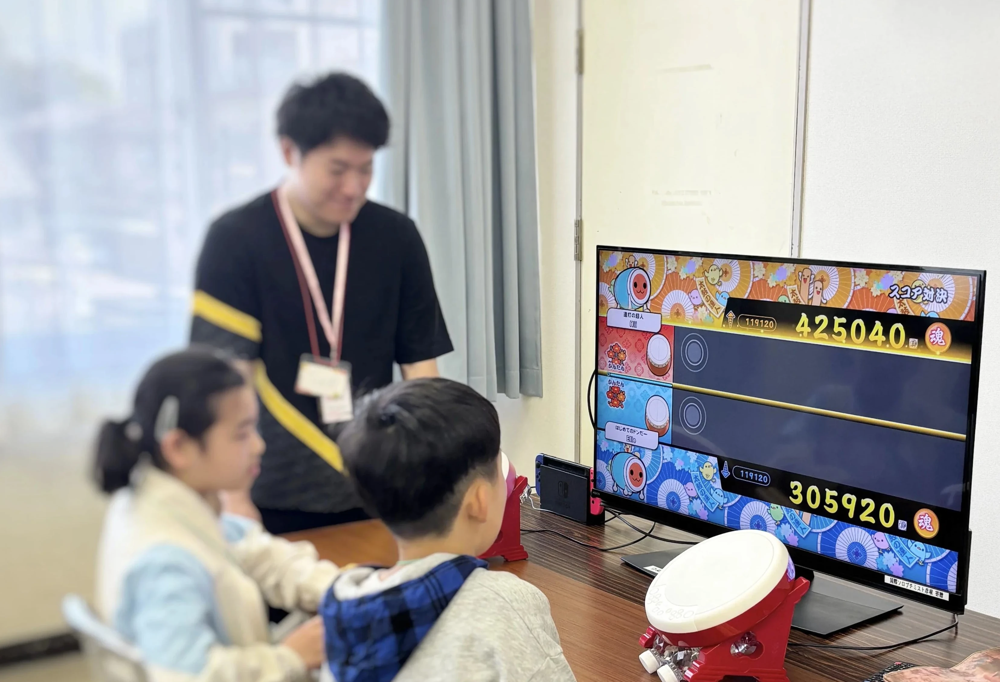
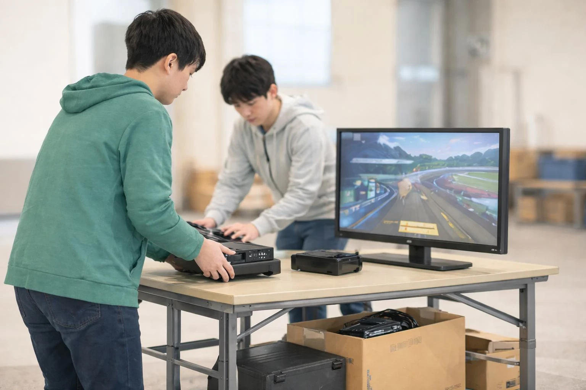
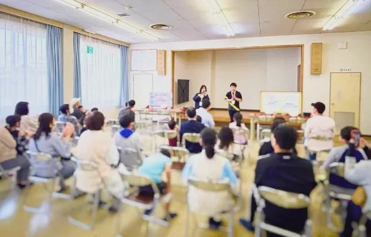
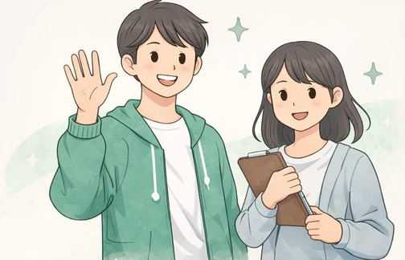
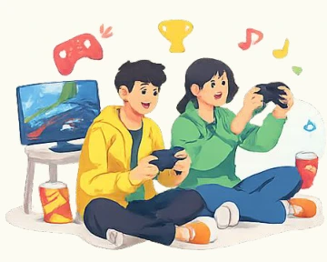
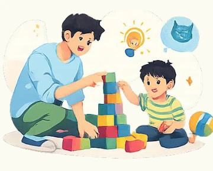
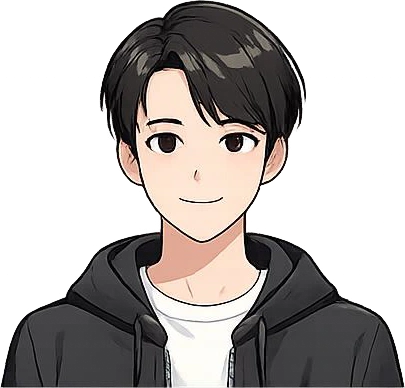
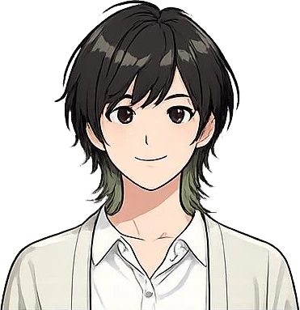

OVERVIEW
日時・会場・募集人数など、参加に必要な情報をまとめました。
服装や持ち物、交通費の支給についてもこちらで確認できます。
開催日：都度ご案内します
時間：12:30集合／16:00解散(予定)
会場：彦根市 東地区公民館
服装：私服／動きやすい服
募集人数：3〜5名
交通費：往復1,000円まで支給
対象：学生(中～大学／専門・院)
締め切り：開催日の3日前まで
※ 持ち物：不要（手ぶらでOK、飲み物は用意します）
※ 本募集はボランティアのため謝礼はありません（交通費のみ支給）
※ 現地集合となります（会場入口でスタッフが案内します）
ROLE
当日は、子どもたちの見守りと簡単なサポートが中心です。
受付・進行・トラブル対応はスタッフが担当するので、未経験でも安心して参加できます。

プレイ中の子供を横で見守り、困っていたら
優しく声をかけて操作のサポートをします。
※専門知識は不要で、手順は当日スタッフが説明します。
ゲーム機やモニターなど、
簡単な準備や片付けを行います。

※重い物、難しい物は基本スタッフが担当します。
会場がスムーズに回るよう見守り、困って
いる方がいればスタッフに共有します。

※子供に注意や指導をする役割ではありません
受付・司会・進行はスタッフが行います。
トラブル、クレーム対応はスタッフが対応
します。
迷ったらすぐスタッフに声をかけてOKです

FLOW
当日の集合から解散までの流れをまとめました。
基本はスタッフの案内に沿って動くだけなので、初参加でも安心です。
12:30 集合
彦根市 東地区公民館に集合。
到着次第、スタッフが案内します。
「まずはスタッフと顔合わせ。緊張しなくて大丈夫です。」
13:00 準備・レクチャー
簡単な役割説明・準備を行います。
スタッフが当日の流れをお伝えします。
「役割はその場で説明します。未経験でも安心。」
13:30 イベント開始
子供たちの見守りやサポートを担当。
難しい作業はないのでご安心ください。
「子どもたちの笑顔を近くで見られる時間。」
15:30 片付け
イベント終了。
片付けの流れをスタッフから案内します。
「みんなで協力してサクッと片付け。」
16:00 解散
みんなで片付けをして終了です。
お疲れさまでした！
「お疲れさまでした。充実感を持って帰れます。」
私たちはゲームやITを入口に、
＼ 若者が主役になってイベントをつくる場を増やしています。 ／
EXPERIENCE
このボランティア参加を通して体験できる内容を、4つの切り口でまとめました。
参加前のイメージづくりとして、ご参考ください。
・受付や案内などの運営サポート
・当日の進行に沿った作業
・役割分担された業務への参加
・スタッフ同士での連携作業
・子どもたちの見守りや声かけ
・挑戦を支えるサポート
・保護者や地域の方とのやり取り
・落ち着いた雰囲気づくり
・指示を受けて動く経験
・周囲を見ながらのサポート
・チームで役割を果たす感覚
・現場の空気を感じながらの対応
・子どもとの関わりの向き不向き
・裏方の作業が合うかどうか
・人と関わる距離感の確認
・無理なく続けられるかの判断
参加してみると、
雰囲気や関わり方が 自然と分かります。
FOR YOU
少しでも気になったら、気軽に参加してみてください。
ボランティアが初めての高校生・大学生も多く、未経験でも大丈夫です！
基本は3〜4時間ほどなので予定の合間でも参加しやすいです。
タイプ1
好きなことを活かして、イベント運営に関われます

タイプ2
子どもたちの挑戦を、近くでサポートできます

タイプ3
未経験の高校生・大学生も多く参加しています
タイプ4
基本は3〜4時間ほどで、予定に合わせやすいです
VOICE
実際にボランティアに参加した方から寄せられた声を掲載しています。
初めての方でも参加しやすい雰囲気かどうか、参考にしていただけます。
運営側のイメージが
変わりました。
(24歳／男性／大学院生)
「裏方って大変そう」と思っていまし
たが、役割が明確で動きやすく、思っ
たよりスムーズに参加できました。
短時間でも達成感があって、また手伝
いたいです。
話すのが苦手な僕でも
大丈夫でした。

(23歳／男性／自営業)
最初は「場に馴染めるかな」って不安
でしたが、やることがはっきりしてて
助かりました。参加してみたら意外と
楽しくて、次はもう少し積極的に動け
そうです。
子どもとの関わり方が
具体的に学べました。

(26歳／女性／教育職)
普段から子どもと接する仕事をしてい
ますが、ただ見守るだけではなく、声
かけやサポートの具体例が整理でき安
心しました。初参加でも動きやすかっ
たです。
短時間で丁度いい
社会参加になりました
(32歳／男性／会社員)
仕事以外で人と関わる機会が少なかっ
たので、良いリフレッシュになりまし
た。準備や段取りも整っていて迷わず
動けましたし、また都合が合えば参加
したいです。
少しでも興味があれば、
まずは気軽に参加してみてください。
ORGANIZATION
本活動は、子ども向けeスポーツイベントを企画・運営する団体が実施しています。
学生の参加も多く、初めての方でも安心して関われる体制を整えています。
団体名
特定非営利活動法人ブライト・エニー・カラーズ
代表者名
寺本俊孝
所在地
〒464-0807
愛知県名古屋市千種区東山通五丁目108番地
設立年月日
2026年6月29日
電話番号
080-8912-6020
FAQ
ボランティア参加にあたって、よくいただく質問をまとめました。
気になる点があれば、お気軽にお問い合わせください。
未経験でも参加できますか？
はい、大丈夫です。
参加者は未経験の高校生・大学生も多く、特別なスキルや経験は一切必要ありません。
どんな服装で参加すればいいですか？
動きやすい私服でOKです。
服装の指定はありません。寒さ対策など、過ごしやすい服装でお越しください。
どれくらいの時間参加しますか？
基本は3〜4時間程度です。
イベント内容によっては、長くて6時間ほどになる場合もありますが、ほとんどの回が3〜4時間で終わっています。
1回だけの参加でも大丈夫ですか？
はい、大丈夫です。1回だけの参加も歓迎しています。
参加してみて「また次も行けそう」と思ったら、無理のない範囲でぜひ次回もご参加ください。
参加に費用はかかりますか？
参加費はかかりません。
交通費は往復1,000円まで支給します。ボランティアのため謝礼はありません。
contact
ボランティア参加に関するご相談やご質問を受け付けています。
参加を検討中の方も、まずはお気軽にお問い合わせください。
※「*」は必須項目です。